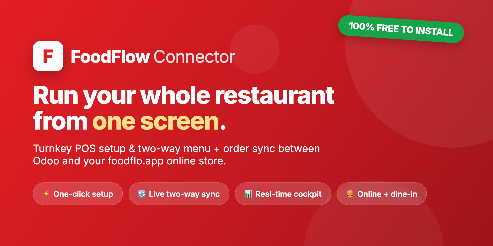
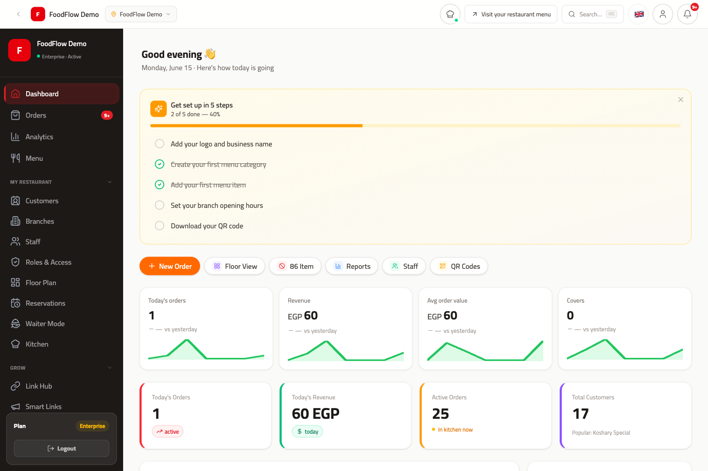
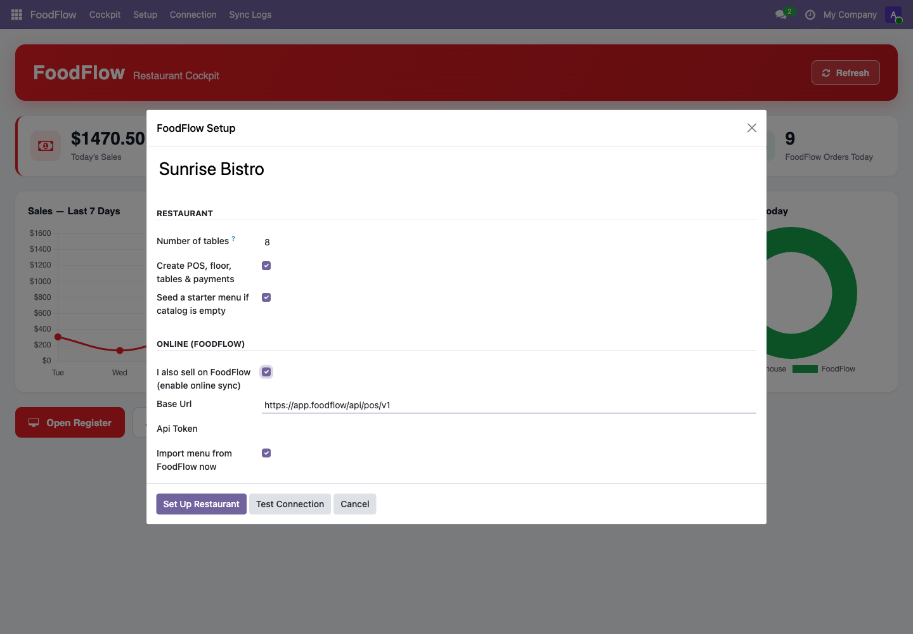
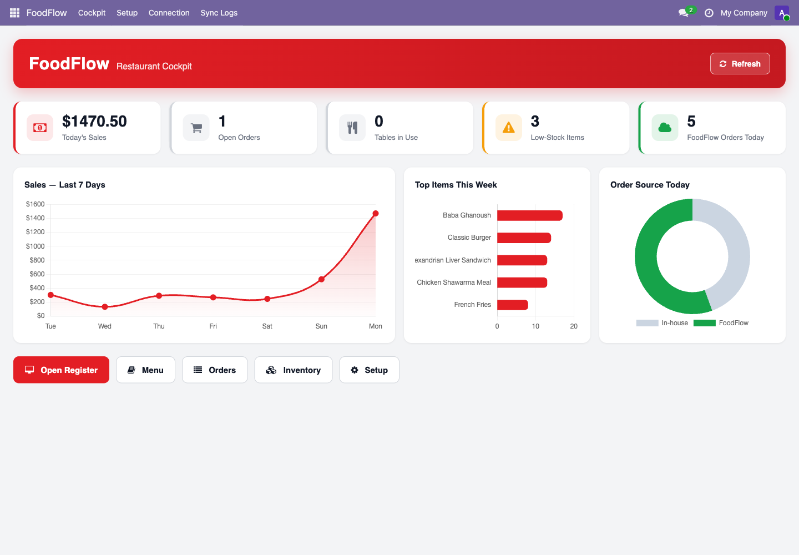

Free Odoo connector - No setup fees - Be online today
foodflo.app is the all-in-one online platform that grows your sales while this connector keeps everything in sync with Odoo. One subscription replaces a pile of expensive tools - and it pays for itself with a single extra order a day.
Digital menu, delivery & pickup, QR-code table ordering - under your name, not a marketplace's.
No 25-30% marketplace commissions eating your margin. Take direct orders and keep the profit.
Your Odoo menu publishes online automatically. No web developer, no agency, no waiting.
Tickets to the kitchen, table bookings and waiter mode - the full front-of-house, included.
Build a customer list, see your best sellers, and market directly - insights a marketplace never gives you.
Online orders land in Odoo POS automatically. One menu, one order stream, one team.
This is the foodflo.app dashboard your restaurant gets: live orders, revenue, analytics, kitchen, menu, reservations and customers - all in one place, all synced with your Odoo POS through this connector.

The guided wizard sets up your POS, dining floor, tables, payments and a starter menu, then links your foodflo.app store and imports its menu. Tick "I also sell on FoodFlow", paste your API token, hit Test Connection - and you're online. It's idempotent, so you can re-run it any time.

Once connected, open a single screen and see how your day is going: today's sales, open orders, tables in use, low-stock alerts and online orders from foodflo.app - with a 7-day sales trend, top sellers, and an in-house vs. online breakdown that shows exactly how much your foodflo.app store is adding.

1. Install this free connector - a FoodFlow app appears in Odoo.
2. Create your store at foodflo.app and copy your API token.
3. Run the wizard, tick "I also sell on FoodFlow", paste the token, Test Connection.
4. Start taking online orders - and watch them land in Odoo automatically.
The connector is free to install. The growth is on foodflo.app.
Requires Point of Sale & Restaurant (pos_restaurant). POS & cockpit work standalone; a foodflo.app account unlocks online ordering.
Developed by Ahmed Eissa - LinkedIn - foodflo.app